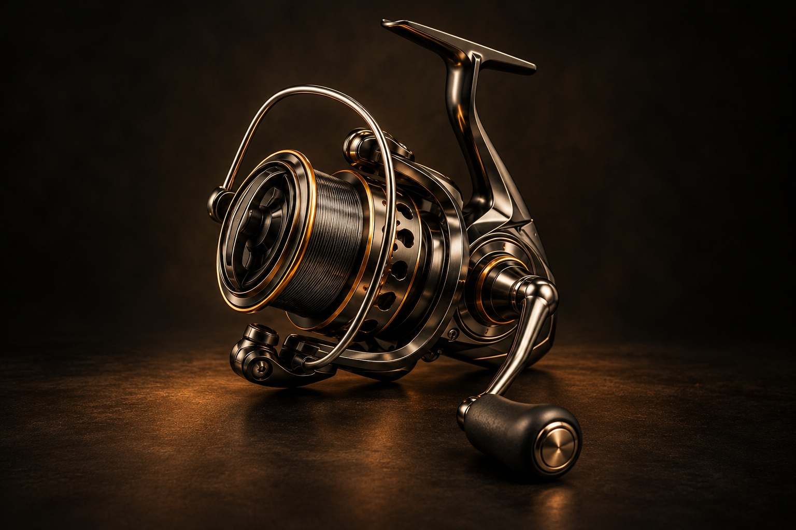

05 / WATCH공개 예정
기계식 손목시계태엽을
태엽을
감아볼까요?
감아둔 힘이 바늘을 움직입니다.

손잡이 1바퀴에 로터 5.2바퀴 · 작동 비율 모형
GOODEASY INTERACTIVE SERIES
릴을 감고, 줄을 튕기고, 셔터와 건반을 눌러보세요.
손끝에서 시작한 움직임을 안쪽까지 따라갑니다.
한 음이 나는 순간의 안쪽.
↗빛이 사진 한 장으로 남기까지.
↗줄의 길이가 바꾸는 소리.
↗줄을 감는 두 가지 움직임.
↗감아둔 힘이 바늘을 움직입니다.
피아노·카메라·기타·낚시 릴을 직접 만져보세요. 다음 이야기들은 한 편씩 공개합니다.